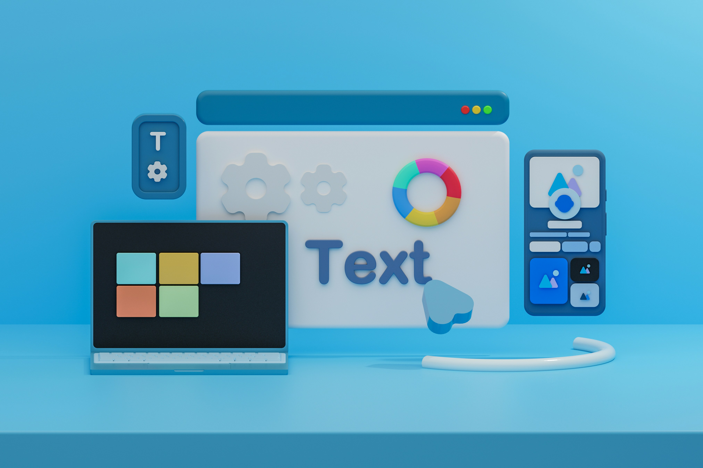
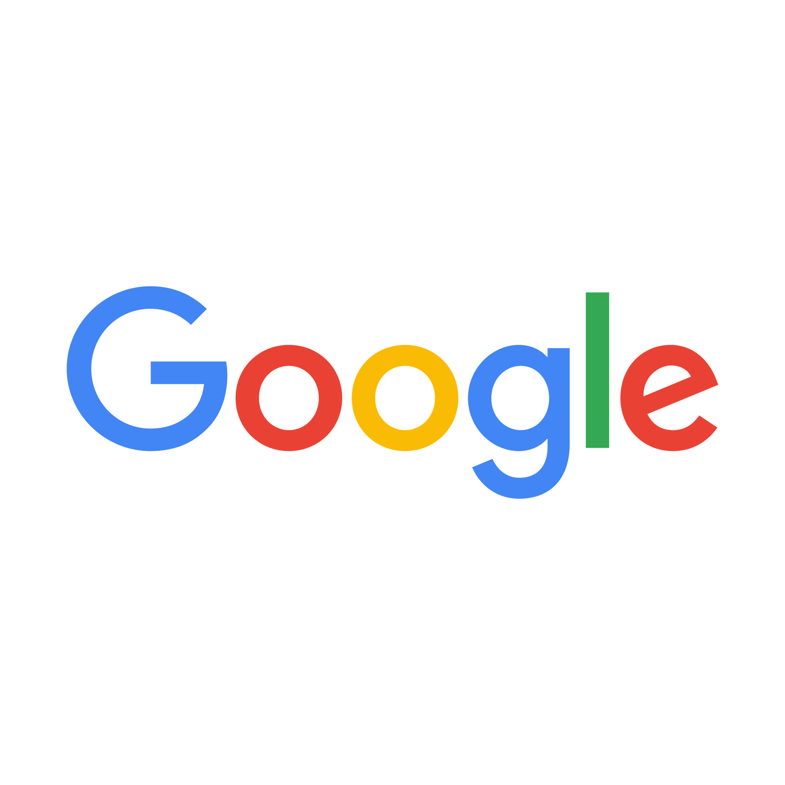
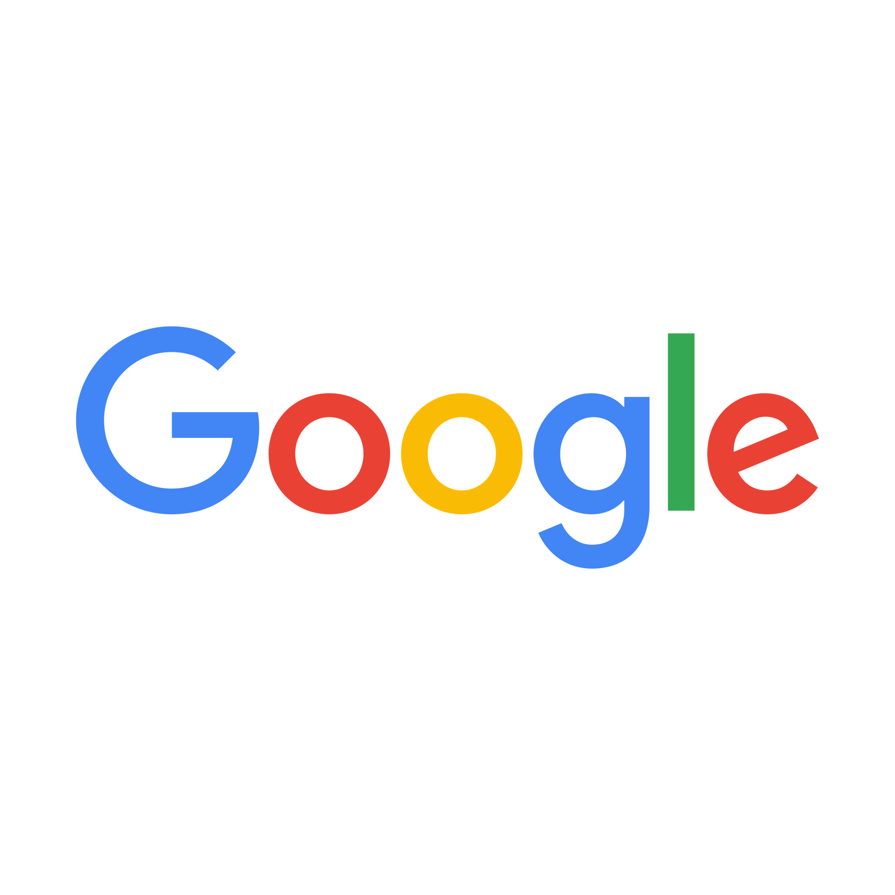

Nos formations
MolenGeek propose des formations immersives et accessibles à tous, visant à développer des compétences clés dans les métiers du numérique. Que ce soit en développement web, marketing digital, data analysis ou design, les programmes sont pensés pour répondre aux besoins actuels du marché de l’emploi. Les participants bénéficient d’un apprentissage intensif, alliant théorie et pratique, encadré par des experts du secteur. Ces formations, ouvertes à tous les niveaux, offrent une opportunité unique de se lancer dans des carrières innovantes et prometteuses. Rejoindre MolenGeek, c’est entrer dans un écosystème dynamique où l’apprentissage, le réseautage et l’entraide sont au cœur.

Coworking
MolenGeek offre un espace de coworking dynamique et accueillant, conçu pour stimuler la collaboration et la créativité. Idéal pour entrepreneurs, freelances et étudiants, ce lieu propose des équipements modernes : Wi-Fi haut débit, thé, café, imprimantes et cuisine équipée. Plus qu’un espace de travail, c’est une véritable communauté où naissent projets, partenariats et idées innovantes. Les membres y trouvent un environnement propice à la productivité, tout en bénéficiant d’une ambiance conviviale et collaborative. Rejoindre le coworking de MolenGeek, c’est intégrer un réseau inspirant, partager ses compétences et grandir dans un écosystème dédié à l’innovation et à la réussite collective.

Agenda
L’agenda de MolenGeek regorge d’opportunités pour apprendre, réseauter et évoluer dans le numérique. Chaque semaine, des formations variées sont proposées : développement web, marketing digital, design, et bien plus encore. À cela s’ajoutent des ateliers, des événements, et des sessions de networking pour rencontrer d’autres passionnés. Flexible et diversifié, l’agenda s’adapte aux besoins des participants, offrant des expériences uniques pour acquérir de nouvelles compétences ou perfectionner ses connaissances. Que vous soyez débutant ou professionnel, l’agenda de MolenGeek est conçu pour vous accompagner dans votre parcours et vous immerger dans un environnement propice à la réussite et à l’innovation.
Formation longue
Pour ajouter des compétences rapidement à mon C.V.
Formation courte
Pour me former entièrement à un nouveau métier.

Formation Photoshop

Formation Workpress
Formation Réseaux Sociaux
Formation Première Pro
ABOUT US
MolenGeek
MolenGeek est un projet novateur basé à Molenbeek-Saint-Jean, une commune de Bruxelles en Belgique. Fondé en 2015 par Ibrahim Ouassari et Julie Foulon, ce hub technologique et entrepreneurial vise à démocratiser l'accès aux compétences numériques et à l'entrepreneuriat, en s'adressant particulièrement aux jeunes issus de milieux sous-représentés ou défavorisés. MolenGeek s'inscrit dans une démarche d'inclusion sociale en utilisant la technologie comme levier d’émancipation et d’intégration professionnelle.


 



.svg)

.svg)